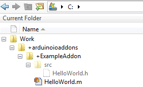

Create HelloWorld Add-On
This example shows how to send a string from an Arduino® Uno board to the MATLAB® command line and create all the necessary files in your custom library using MATLAB and C++.
Create Folder Structure
Create a folder package to contain all the files for your custom library, and add it to the MATLAB path. To access all the library files for this example click on 'Open Example' and download the 'CreateFolderStructureExample/SDKExampleHelloWorld' folder attached with this example.
For this example:
1. Add a folder named +arduinoioaddons in your working folder.
2. In +arduinoioaddons, add a +ExampleAddon subfolder to contain your MATLAB class file. For example C:\Work.
3. In the +ExampleAddon subfolder, add a src folder to contain your C++ header files.

Create C++ Code
For this example, create a C++ header file named HelloWorld.h,
and save it in the +arduinoioaddons/+ExampleAddon/srcfolder. This
file wraps methods to expose to the Arduino library.
You can access the library files from 'CreateFolderStructureExample/SDKExampleHelloWorld' folder downloaded in Create Folder Structure.
Include header files, including
LibraryBase.hand any other third-party header file that the add-on library depends on.#include "LibraryBase.h"
Create an add-on class that inherits from the
LibraryBaseclass, which defines all the necessary interfaces.In the constructor, define the library name, and register the library to the server.
class HelloWorld : public LibraryBase { public: HelloWorld(MWArduinoClass& a) { libName = "ExampleAddon/HelloWorld"; a.registerLibrary(this); }The custom class and library names must have this format:
shield(vendor)/device(library)
Determine the command calls to issue from MATLAB.
Override the command handler, and create a switch case for each command that the add-on executes on the Arduino device:
public: void commandHandler(byte cmdID, byte* inputs, unsigned int payload_size) { switch (cmdID){ case 0x01:{ byte val [13] = "Hello World"; sendResponseMsg(cmdID, val, 13); break; } default:{ // Do nothing } } } };The command IDs must match up with the operations that you add to the MATLAB add-on library. For more information, see Command Handler.
(Optional) Use
debugPrintto pass additional messages from the Arduino device to the MATLAB command line.
Create MATLAB Wrapper
The MATLAB add-on wrapper class that defines your library must inherit from matlabshared.addon.LibraryBase. The matlabshared.addon.LibraryBase class defines several constant
properties that you must override in your MATLAB class. The class also contains internal utility functions that enable
you to send and retrieve data from the server running on the Arduino board.
You can access the library files from 'CreateFolderStructureExample/SDKExampleHelloWorld' folder downloaded in Create Folder Structure.
Create a MATLAB class, and define the command ID for each command that is sent to the server on the board.
classdef HelloWorld < matlabshared.addon.LibraryBase properties(Access = private, Constant = true) READ_COMMAND = hex2dec('01') end ... end
Override constant properties in the class to specify the location of source header files.
classdef HelloWorld < matlabshared.addon.LibraryBase ... properties(Access = protected, Constant = true) LibraryName = 'ExampleAddon/HelloWorld' DependentLibraries = {} LibraryHeaderFiles = {} CppHeaderFile = fullfile(arduinoio.FilePath(mfilename('fullpath')), 'src', 'HelloWorld.h') CppClassName = 'HelloWorld' end ... end
Define the class constructor, set the methods to call the class constructor, and set the parent property.
classdef HelloWorld < matlabshared.addon.LibraryBase ... methods function obj = HelloWorld(parentObj) obj.Parent = parentObj; end ... end end
Always assign the first input argument to
obj.Parent.The support package auto-detects the class only if you have redefined all the properties. If you do not need a value, leave the field empty.
Define the method to read the data back.
classdef HelloWorld < matlabshared.addon.LibraryBase ... methods ... function out = read(obj) cmdID = obj.READ_COMMAND; inputs = []; output = sendCommand(obj, obj.LibraryName, cmdID, inputs); out = char(output'); end end end
For help on using MATLAB programming language, see Classes.
Register Add-On
To register your add-on library, add the working folder that contains
+arduinoioaddons to the MATLAB path:
You can access the library files from 'CreateFolderStructureExample/SDKExampleHelloWorld' folder downloaded in Create Folder Structure.
addpath C:\Work
Once you add the folder to the path, you should see the files listed in the MATLAB Current Folder browser.
Make sure the ExampleAddon/HelloWorld library is
available.
listArduinoLibraries
listArduinoLibraries
ans =
'Adafruit/MotorShieldV2'
'I2C'
'SPI'
'Servo'
'ExampleAddon/HelloWorld'Tip
If you do not see your add-on library in the list, see Custom Arduino Library Issues for more information.
Run MATLAB Code
This example shows how to return data from the Arduino library commandHandler to the MATLAB command line.
Create an arduino object and include the new library.
Set ForceBuildOn to true to reprogram
the board.
arduinoObj = arduino('COM3', 'Uno', 'Libraries', 'ExampleAddon/HelloWorld', 'ForceBuildOn', true);Arduino devices reuse cached code if the specified library matches a library name in the source code. Reprogramming forces the device to newly download the header file, ensuring current and accurate information.
Create an add-on object using the ExampleAddon
library.
dev = addon(arduinoObj,'ExampleAddon/HelloWorld');Execute the command on the server, and read the data back into MATLAB.
read (dev)
ans = Hello World